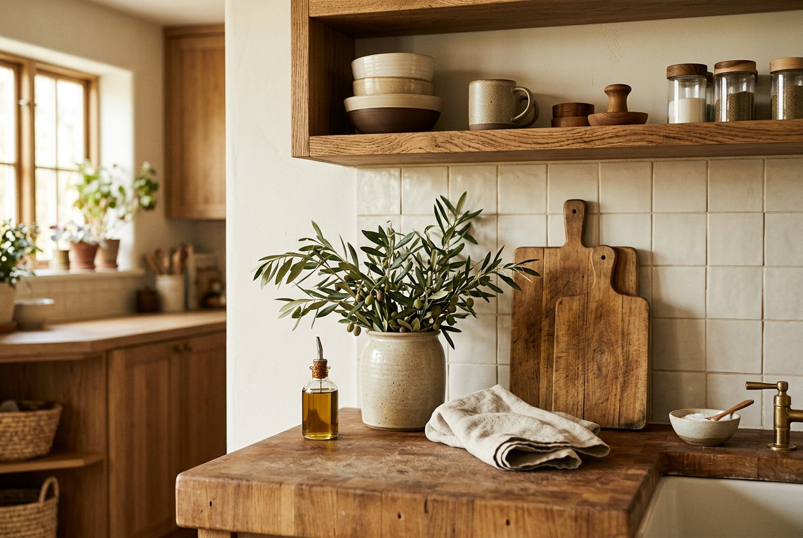

Project guide
Project guideWalls & finishes
Wallpaper smoothing kit
A smoother start for your next peel-and-stick project.
What to look forThe home edit / No. 01
Practical upgrades and honest buying guides for a home that works a little better every day.

The everyday kitchenThe shortlist
Three small projects that earn their space.
Project guideWalls & finishes
A smoother start for your next peel-and-stick project.
What to look for Project guide
Project guideKitchen organization
Reclaim a little worktop space without moving the essentials.
What to look for Project guide
Project guideStorage & shelving
Give the pans you reach for most a spot of their own.
What to look forCategory illustrations, not product photos. Buying links are withheld until validated.
Late autumn / Countertop appliances
Kitchen questions worth answering before you make room on the counter.
Countertop appliances
Start with the meals you cook on repeat, then compare the cooking surface and the space needed to load it.
Countertop appliances
Advertised volume is a starting point. Usable cooking surface is what you’ll go looking for when dinner won’t fit.
Countertop appliances
Compare the space it takes while you’re using it, then count the pieces you will wash when you’re done.
Get new guides in your feed reader. No newsletter sign-up required.